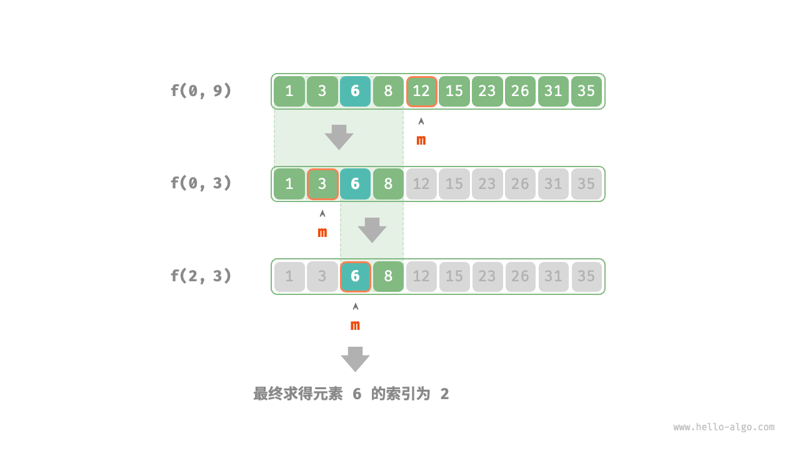

分治搜索策略
我们已经学过，搜索算法分为两大类。
- 暴力搜索：它通过遍历数据结构实现，时间复杂度为 $O(n)$ 。
- 自适应搜索：它利用特有的数据组织形式或先验信息，时间复杂度可达到 $O(\log n)$ 甚至 $O(1)$ 。
实际上，时间复杂度为 $O(\log n)$ 的搜索算法通常是基于分治策略实现的，例如二分查找和树。
- 二分查找的每一步都将问题（在数组中搜索目标元素）分解为一个小问题（在数组的一半中搜索目标元素），这个过程一直持续到数组为空或找到目标元素为止。
- 树是分治思想的代表，在二叉搜索树、AVL 树、堆等数据结构中，各种操作的时间复杂度皆为 $O(\log n)$ 。
二分查找的分治策略如下所示。
- 问题可以分解：二分查找递归地将原问题（在数组中进行查找）分解为子问题（在数组的一半中进行查找），这是通过比较中间元素和目标元素来实现的。
- 子问题是独立的：在二分查找中，每轮只处理一个子问题，它不受其他子问题的影响。
- 子问题的解无须合并：二分查找旨在查找一个特定元素，因此不需要将子问题的解进行合并。当子问题得到解决时，原问题也会同时得到解决。
分治能够提升搜索效率，本质上是因为暴力搜索每轮只能排除一个选项，而分治搜索每轮可以排除一半选项。
基于分治实现二分查找
在之前的章节中，二分查找是基于递推（迭代）实现的。现在我们基于分治（递归）来实现它。
!!! question
给定一个长度为 $n$ 的有序数组 `nums` ，其中所有元素都是唯一的，请查找元素 `target` 。
从分治角度，我们将搜索区间 $[i, j]$ 对应的子问题记为 $f(i, j)$ 。
以原问题 $f(0, n-1)$ 为起始点，通过以下步骤进行二分查找。
- 计算搜索区间 $[i, j]$ 的中点 $m$ ，根据它排除一半搜索区间。
- 递归求解规模减小一半的子问题，可能为 $f(i, m-1)$ 或 $f(m+1, j)$ 。
- 循环第
1.步和第2.步，直至找到target或区间为空时返回。
下图展示了在数组中二分查找元素 $6$ 的分治过程。

在实现代码中，我们声明一个递归函数 dfs() 来求解问题 $f(i, j)$ ：
- "Python"
```python
def dfs(nums: list[int], target: int, i: int, j: int) -> int:
"""二分查找：问题 f(i, j)"""
// 若区间为空，代表无目标元素，则返回 -1
if i > j:
// 计算中点索引 m m = (i + j) // 2 if nums[m] < target:return -1
elif nums[m] > target:// 递归子问题 f(m+1, j) return dfs(nums, target, m + 1, j)
else:// 递归子问题 f(i, m-1) return dfs(nums, target, i, m - 1)// 找到目标元素，返回其索引 return m
def binary_search(nums: list[int], target: int) -> int: """二分查找""" n = len(nums) // 求解问题 f(0, n-1) return dfs(nums, target, 0, n - 1)
- "C++"
```cpp
/* 二分查找：问题 f(i, j) */
int dfs(vector<int> &nums, int target, int i, int j) {
// 若区间为空，代表无目标元素，则返回 -1
if (i > j) {
return -1;
}
// 计算中点索引 m
int m = (i + j) / 2;
if (nums[m] < target) {
// 递归子问题 f(m+1, j)
return dfs(nums, target, m + 1, j);
} else if (nums[m] > target) {
// 递归子问题 f(i, m-1)
return dfs(nums, target, i, m - 1);
} else {
// 找到目标元素，返回其索引
return m;
}
}
/* 二分查找 */
int binarySearch(vector<int> &nums, int target) {
int n = nums.size();
// 求解问题 f(0, n-1)
return dfs(nums, target, 0, n - 1);
}
- "Java"
```java
/ 二分查找：问题 f(i, j) /
int dfs(int[] nums, int target, int i, int j) {
// 若区间为空，代表无目标元素，则返回 -1
if (i > j) {
} // 计算中点索引 m int m = (i + j) / 2; if (nums[m] < target) {return -1;
} else if (nums[m] > target) {// 递归子问题 f(m+1, j) return dfs(nums, target, m + 1, j);
} else {// 递归子问题 f(i, m-1) return dfs(nums, target, i, m - 1);
} }// 找到目标元素，返回其索引 return m;
/ 二分查找 / int binarySearch(int[] nums, int target) { int n = nums.length; // 求解问题 f(0, n-1) return dfs(nums, target, 0, n - 1); } ```